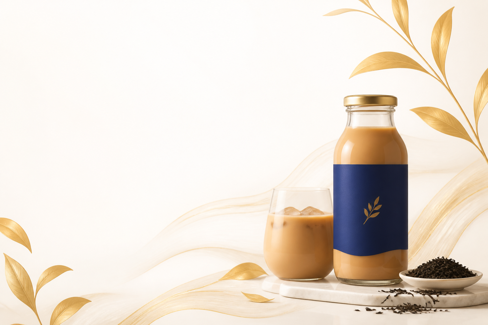
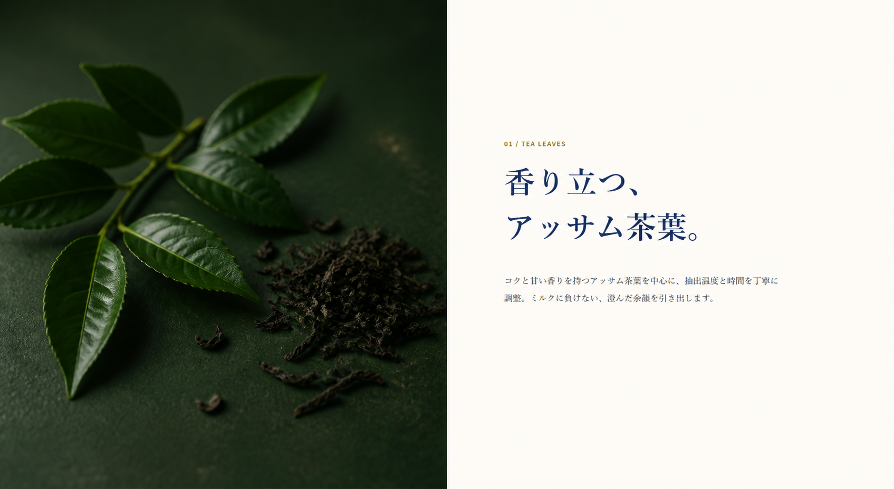
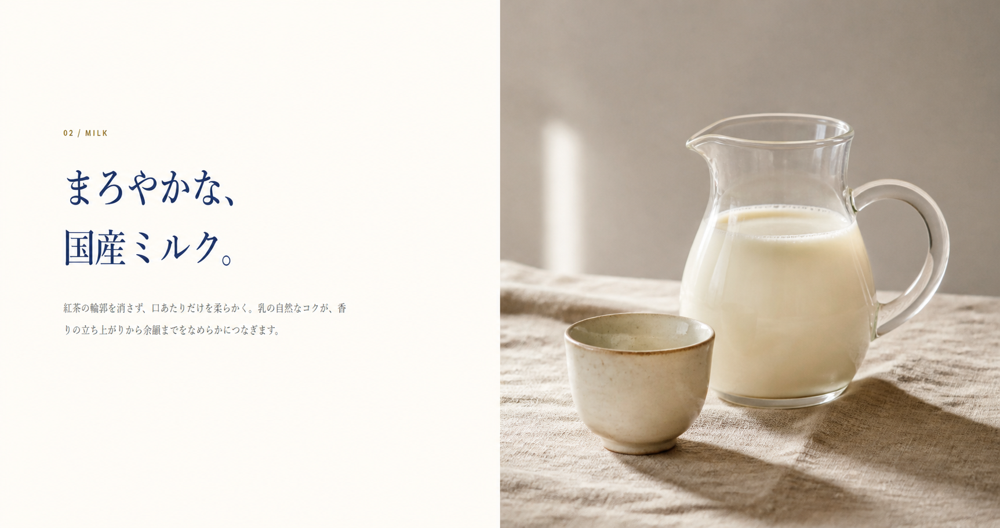
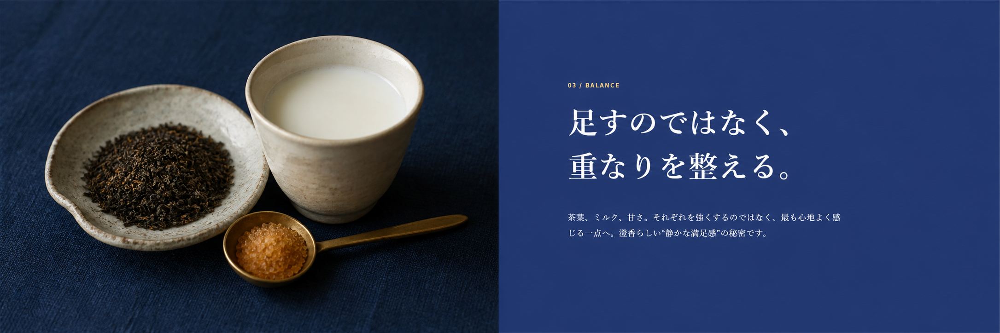

定番
ロイヤルミルクティー
紅茶のコクとミルクの調和。270ml

A QUIET MOMENT
しっかりとした紅茶感。やさしく包むミルク。
甘さに頼らず、素材の調和で生まれる奥行きを目指しました。



PRODUCT LINEUP
定番
紅茶のコクとミルクの調和。270ml
すっきり
軽やかな甘さと爽やかな後味。270ml
無糖
茶葉の香りをまっすぐ楽しむ。500ml
商品を選ぶと、ここに選択内容が表示されます。
OUR CRAFT
茶葉の選定から抽出、ミルクとの調和まで。数字だけでは測れない香りと口あたりを、つくり手が確かめながら仕上げています。
FAQ
このLPは自主制作の架空ブランドです。実際の販売は行っていません。
ブランドコンセプト上は、冷温どちらでも香りが引き立つ設計を想定しています。
乳成分を含む想定です。実商品ではないため、表示内容はデザイン上のサンプルです。